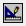

To access: Click the Scenario Viewer tab.
Use the Scenario Viewer to inspect the parameters and physical layout of each scenario before solving, and to view the results for each scenario after solving.
A three-column table:
Column 1 − Results Stored Indicator. An icon indicates that Full results are stored.
Column 2 − Scenario Name.
Column 3 − Solution Status.
Select a scenario by clicking in a row, the row is then highlighted.
The model parameters for the currently-selected scenario. The parameters are defined within three tabs: Model Setup, Model, Solver Control, and User Variables.
The physical layout of the currently-selected scenario. When in Analyze mode, the layout can be overlaid with results.
Attribute values for the currently-selected scenario.
Solver results for the currently-selected scenario.
The Total Range for scalars is the Maximum and Minimum for all scenarios with full results stored.
Refer to Results Property Sheets in the Simcenter Flotherm User Guide for details on results property sheets.
Press F10, or click the Create  and Analyze icons, to switch between Create and Analyze mode.